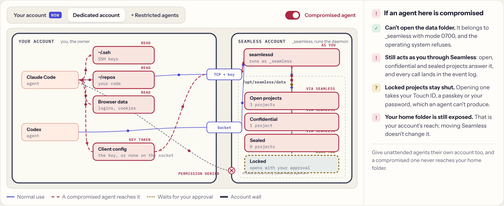
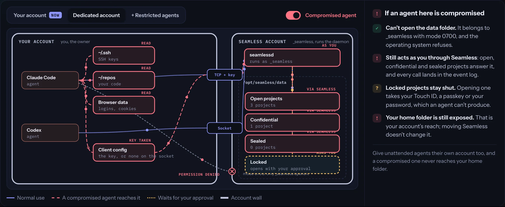

Security and privacy
What your agents know stays yours.
Seamless keeps your agents’ shared memory as plain files on your own computer. There is no account, no Seamless cloud, and no usage tracking. When the work gets sensitive you add walls, up to projects that open only when you approve with Touch ID, a passkey, or your password. This page says what each wall stops, and what none of them do.
Read this page
- No account
- No telemetry
- Files you can read
- Signed, verified releases
- Report a vulnerability
i. the short version
What is true the moment you install it.
A fresh install is a Standalone one: everything on one computer. Before you turn on anything below, this much already holds.
It answers your computer only
In plain wordsNothing outside your computer can reach Seamless, until you set it up as a Server for your own other computers.
In technical termsListens on
127.0.0.1:8081. A request naming a Host it does not serve gets421, which closes DNS rebinding. A Server binds its own name, with TLS 1.2 or later.No account, no cloud
In plain wordsThere is nothing to sign up for, and Seamless has no hosted service. It is two small programs on your computer.
In technical termsA Go daemon (
seamlessd) and a CLI (seam), no CGO. One SQLite file and a folder of markdown under~/.seamless. No external database or vector service.No usage tracking
In plain wordsSeamless sends no telemetry. On its own it only checks for new versions, anonymously, and one setting turns that off.
In technical termsNo analytics code. The update check is an anonymous request to GitHub’s release list every six hours, carrying no token, version, host or install id.
update.check: falsestops all update traffic.Files you can read
In plain wordsEvery memory is a text file you can open, search, back up, or delete. Nothing is hidden in a format only Seamless understands.
In technical termsMemories and notes are markdown with YAML frontmatter, and they are the source of truth. SQLite indexes them and keeps sessions, tasks and events; the index rebuilds from the files.
A key your agents never copy
In plain wordsPrograms need Seamless’s key to talk to it, and the key never ends up in your agents’ settings.
In technical termsA random 32-byte key in a
0600config file. Claude Code reads it throughseam mcp-headersand Codex throughseam mcp-proxy, at connect time; neither puts it in client config or argv.A backup every day
In plain wordsSeamless backs itself up daily and keeps a week. If you restore one and change your mind, you can undo it.
In technical termsRelease installs archive the database and corpus daily and keep 7, in
~/.seamless/backups. A restore is staged, applied at the next start, and undoable; it keeps every project’s lock.
Every project starts open, and the five layers below start off. A program running as you can read ~/.seamless directly until layer 3 moves Seamless into an account of its own.
ii. what leaves
What leaves your computer, and when.
Seamless itself sends very little. Most of what can leave is something you set up, and each row says how to stop it.
| What | Where it goes | When | To stop it |
|---|---|---|---|
| A check for new versionsanonymous: no token, version, host or install id | GitHub’s release list | every six hours, on release installs | update.check: false |
| Update downloads | GitHub releases | when an install the installer made updates itself | update.auto: false, or update.check: false for all update traffic |
| The text of your memories and notes, and your recall queries | the model provider you configure, to be embedded | only after you add an OpenAI or Anthropic key, and from every project, fenced and locked ones included | use Ollama, which keeps it on your computer, or no provider at all |
| A project’s session findings | that provider’s chat model, for the gardener’s monthly digest | only with a provider key set | Ollama, or no provider |
| A page an agent asks to capture | the address the agent names | only when an agent calls capture_url | limited to ports 80 and 443; private and loopback addresses are refused |
| Requests from your other computers | your own Server, over TLS | only in a Networked setup | stay Standalone |
Two things are outside Seamless’s reach. What an agent reads from Seamless travels to that agent’s own model provider with the rest of the conversation, and the agent’s app keeps its own transcripts.
iii. the five layers
Built for the day an agent gets tricked.
Agents read web pages, issues and email, and any of them can carry instructions an agent will follow. Each layer narrows what a tricked agent can read, what it can plant for the next session, and what it can open without you. They are the same five, in the same order, as the console’s Privacy screen.
How far a tricked agent gets
The same agent, following a planted instruction, in each arrangement. Seamless can only protect what it holds: in your own account a compromised agent also reaches everything else you own, which is why the last column matters.
| The agent tries to | Seamless runs as you the default | Seamless in its own account layers 3 and 4 | Agent in a restricted account layer 5 |
|---|---|---|---|
| Read the memory files on disk | can | cannotthe folder belongs to Seamless | cannot |
| Use Seamless as you: open, confidential and sealed projects | can | canand every call lands in the event log | only what you listopen, unlocked projects |
| Open a locked project | no locks yetlocks need layer 3 | only if you approve | cannotit cannot ask |
| Plant a rule the next session is briefed with | held for youwith write screening on | held for youwith write screening on | waits for youalways |
| Reach the rest of your home folder: SSH keys, code, browser data | can | canthat is your account’s reach | cannot |
Seamless in its own account layers 3 and 4


The layers, one by one.
-
1Project fences
per project, every OS
In plain wordsMark a client’s project confidential and nothing in it shows up while you work on anything else. Seal it, and nothing from outside gets in either. Good for keeping one client’s matter out of another’s.
In technical terms
open,confidential(nothing leaves) orsealed(nothing in or out), enforced at every surface Seamless serves: briefings, recall, tool reads and writes, family views, the gardener. A refusal never echoes content. With access requests on, an agent asks; you approve a read-only or read-and-write grant, or a move into the project, and later writes carrymay_containprovenance stamps.Its limit: a fence stops accidents between well-behaved agents. Until layer 3 it trusts the session an agent says it belongs to, and does not stop an agent reading the files directly.
-
2Write screening
optional, every OS
In plain wordsWhen an agent tries to save something that looks planted, like hidden instructions or a password, it waits for you on the console’s Held screen instead of reaching the next session. Good for agents that read the web, issues or email.
In technical termsEvery agent write to a memory or note is screened on your computer for secrets, injection markers, role tags, hidden comments, zero-width and bidi characters, encoded blobs and unlisted links. Holds wait in a database queue, never in the corpus. A constraint’s supersede or delete is always held, as is a rule change from a session that fetched outside text. Injected lines carry their provenance, files changed outside Seamless are quarantined, and a lockdown switch narrows briefings to what you confirmed.
Its limit: the screens are heuristics. They catch the known shapes of an attack and hold the rest of the suspicious writes for you to judge.
-
3Seamless in its own account
optional, macOS & Linux
In plain wordsGive Seamless its own user account on your computer, and your agents can no longer open its files. They have to ask it, and it knows exactly who is asking. That is what makes locks possible.
In technical terms
peer_auth: the daemon runs as a dedicated OS account with a0700data directory and serves a Unix socket, where the kernel names each caller’s uid (LOCAL_PEERCREDon macOS,SO_PEERCREDon Linux). Nothing the caller sends can change that. It refuses to start if another account could rewrite its data, its socket’s directory, its config or its binary.Its limit: an agent running as you still acts as you through Seamless, and reaches the rest of your home folder. Root, and anyone who can become Seamless’s account, reads everything.
-
4Locked projects
optional, macOS & Linux
In plain wordsA locked project stays closed, even to its own agents, until you say yes with Touch ID, a passkey, or your password. The yes covers that one agent, for as long as you choose.
In technical termsAn approval is a lease on the asking agent’s process tree, read from the kernel: the session, 1 h or 4 h, capped at 8 h by default. The proof is
seam approve(sudo -k), a WebAuthn passkey that signs its duration, or a Secure Enclave key in the Seamless Approve app. Its Touch ID prompt is built from the daemon’s facts, never the agent’s words, so a request cannot dress itself up. A locked project is always confidential or sealed too.Its limit: what an approved session read stays in its transcript after the approval ends.
-
5Restricted agent accounts
optional, macOS & Linux
In plain wordsRun unattended agents as a separate user on your computer. They see only the projects you open to them, and any rule they change waits for you. Good for agents that run overnight without you watching.
In technical terms
peer_auth.restricted: the account reaches open, unlocked projects, shaped byexcludeoronly. It reads the global scope without writing it, cannot create projects or ask for access, and its changes to constraints, conventions, protocols and stages wait as proposals on the Held screen. Everything it writes is labeled with the account.Its limit: it reaches whatever you open to it, and nothing more.
iv. verified updates
Every update proves where it came from.
A release carries two signatures from two different holders, and nothing installs until both check out. An update that fails to come up rolls itself back.
- built
By the release workflow
In plain wordsGitHub signs each release on behalf of the exact build that made it.
In technical termsA Sigstore keyless signature over
checksums.txt, tied to this repository’s release workflow at the release’s exact tag. - signed
By the maintainer’s hardware key
In plain wordsA person signs it too, with a physical key that has to be touched and unlocked with a PIN.
In technical terms
checksums.txt.sshsig, an OpenSSH signature from a FIDO security key with touch and PIN required, on every release after v0.8.3. It covers every archive and both installers. - notarized
By Apple, on macOS
In plain wordsThe Mac programs are signed by their developer and checked by Apple.
In technical termsThe darwin binaries carry a Developer ID signature and are notarized.
- checked
Before anything runs
In plain wordsThe installer and the updater refuse a release whose signatures do not match.
In technical termsThe installers check archives against
checksums.txtand its owner signature (and Sigstore, withcosign). The updater verifies the Sigstore bundles in-process against a trusted root built into the binary;update.release_signersmakes it require the maintainer’s signature as well. - installed
Carefully
In plain wordsAn update waits a day after release, backs up first, and undoes itself if the new version does not start.
In technical termsA 24 h soak after publishing, a pre-update backup, a health check of a freshly started process, and an automatic rollback, which never unlocks a project.
A fresh install trusts this site, which publishes only from release tags and the maintainers’ site tags, and the keys the installer carries. Piping a script into a shell deserves a read first: the installer is one file.
v. your computers
Your other computers, with no cloud in between.
In plain wordsShare one memory across your laptop and your desktop. One of them keeps the data; the others pair with it using a one-time code and talk to it over an encrypted connection. You can cut any of them off from the console.
In technical termsThe Server serves https (TLS 1.2+) under the name setup gave it. A Client checks the certificate’s SHA-256 fingerprint before it sends a pairing code (80 bits, 10 minutes, single use, stored hashed); plain-http pairing is refused. A macOS or Linux Client runs a relay that pins the exact certificate, holds a client certificate of its own and reports each caller’s uid and process chain. Each device is revocable on the Devices page.
- The Server’s console shows a pairing code.
- The Client checks the Server’s certificate fingerprint.
- It pairs with the code, once, within ten minutes.
- From then on it uses a credential of its own, which you can revoke.
vi. the limits
What Seamless does not claim.
A security story is only as good as its edges, so here they are.
- No encryption at rest.Memories, notes and backups are plain files. Disk encryption is your operating system’s job, and worth turning on.
- Programs that run as you.Until Seamless runs in its own account, any program of yours can read
~/.seamlessand its key, whatever the fences say. - Your home folder.Seamless protects what it holds. An agent running as you still reaches your SSH keys, code and browser data; give unattended agents an account of their own.
- Root.Root, and anyone who can become Seamless’s account, reads everything. A passwordless
sudovoids the arrangement. - What a session already read.An approval that ends does not unread what is in the agent’s transcript.
- Copies made elsewhere.Seamless guards its own surfaces. An agent can still put what it read into a file, a commit or a pull request.
- Your model provider.With a cloud provider configured, embedded text goes to it from every project. Ollama keeps it local.
- A daemon that is down.Hooks fail open, so an agent keeps working, without its briefing, rather than stopping.
- Windows.No Seamless in its own account, no relay and no Server role, so no locked projects on Windows.
vii. pick a setup
Turn on what your work needs.
Most people need nothing beyond a fresh install. Each row is a step you can take later, without moving anything.
| If you | Turn on | How |
|---|---|---|
| Work alone on ordinary projects | nothing: a Standalone install | Quickstart |
| Keep a client’s work out of your other projects | confidential or sealed on that project | Project isolation |
| Let agents read the web, issues or email | write screening | Write screening |
| Want a project even your own agents open only with your yes | Seamless in its own account, then lock the project | Locked projects |
| Run agents unattended | a restricted agent account | Restricted accounts |
| Use more than one computer | a Networked setup | Network install |
The whole model, with every mechanism and its guide, is in the docs: Security and privacy. The console’s Privacy screen draws it for your own setup.
Found a security problem?
Please report it privately through GitHub, not in a public issue. The report stays between you and the maintainers until a fix ships, and the security policy says what is in scope.